さて、いよいよ地獄巡りである。
先程見てきたのは案内図右手の寝釈迦〜本堂〜壁のない建物（赤屋根の工場みたいな平屋）〜古い仏塔（＆ド派手なレリーフ）。
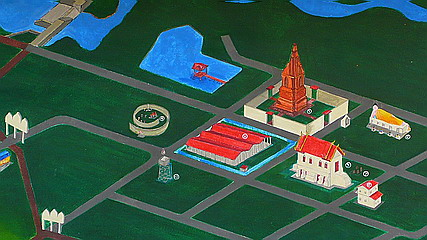
壁のない建物の左側に渦巻状の塀があるのがおわかりいただけるだろうか。
そこが楽しい楽しい地獄ランドである。
もういきなり入口がこんなですから。嫌でも盛り上がってきちゃいますね。
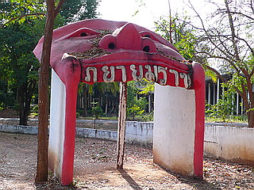
地獄ランドへは渦巻状の塀沿いに歩いていかなければならない。
で、その塀に描かれているのがスゴイのなんのって。
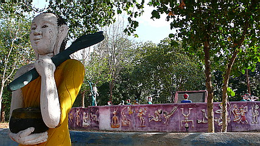
最初は死後の世界のプロローグ。
タイではあの世とこの世の境目は三途の川ではなくてオッパイ山ハイキングなのだろうか。
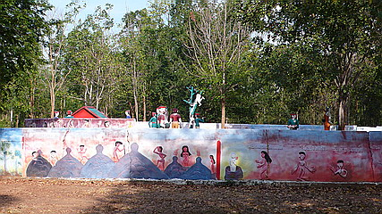
で、オッパイを見て思わず喜んじゃう者、思わず首が取れちゃう者。オッパイも負けじと大噴射。
あ、矢吹ジョーが！真っ白に…
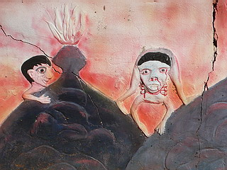 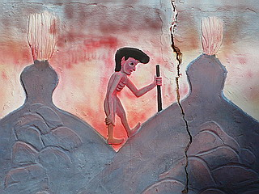
更に進み2周目あたりに入ってくると連続した風景を描こうという意図は一切なくなり、ひたすら変形した人体のレリーフが続く。
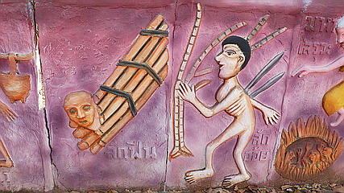
こちらはお馴染みの頭が動物化した人達シリーズ。
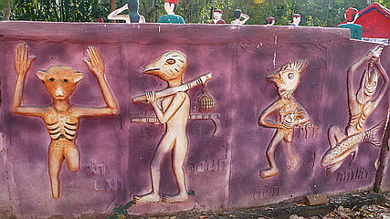
そしてお馴染み地獄の責め苦フルコース、お好みのコースをお選び下さい〜。
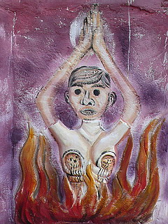 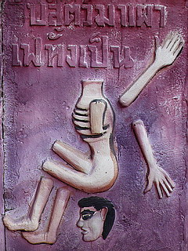 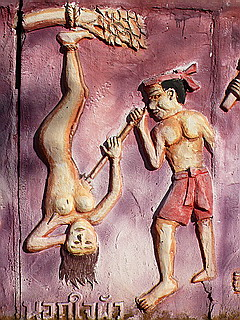 プルコギコース
活造りコース
スープ肉まんコース
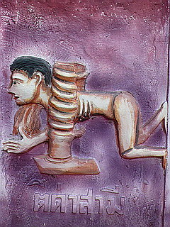 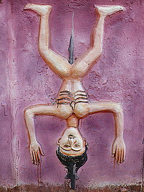 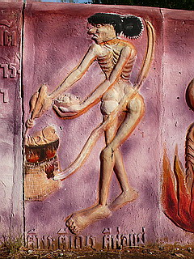 パスタコース
シシケバブコース
トムヤムクンコース
さらにエスカレートしていく壁画レリーフ。
さしづめ地獄怪獣図鑑と化している。
いや。最早、一般的に考えられるタイの地獄風景や責め苦すら逸脱してしまい、作り手の妄想大気圏内に突入中。
もう、地獄は怖いから悪い事しないようにしようとか、生き物を大切にしようとか、お坊さんを尊敬しようとか、いつも混んでる店は旨いとか、テレビは一日2時間までとか、痔にはボラギノールとか、そんな世間一般の常識が徐々に霞んできそうな独自すぎる世界観。
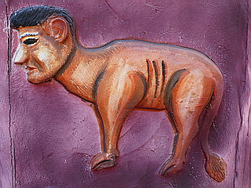 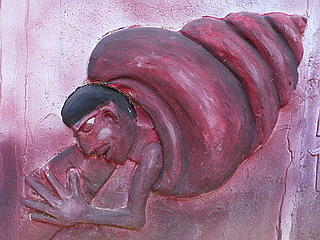
すでに地獄世界の表象という大命題さえ認識しているのかどうかさえ怪しげ。
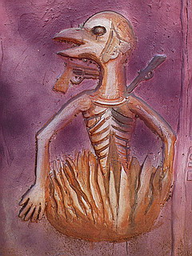 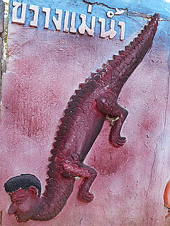 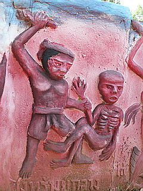
とりあえず俺の思いついたエグキャラ見てよ！の気持ちで一杯なんだと思う。
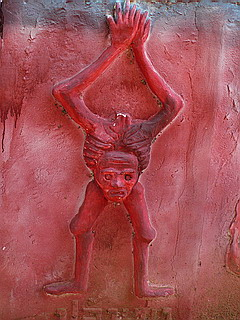 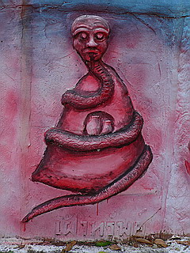
パープルな脳内世界陳列はまだまだ続く…
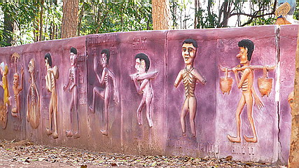
この辺になると「昨日見た夢」と「適当に開いた百科事典のページ」を無理矢理組み合わせているみたいな感じで、エグさすら通り越してシュールの境地っぽくなってくる。
もし、何かの試験を受けに行って「この画像を見て作者の意図を述べなさい」という問題が出たとしたら「ラリってんでしょ」と即答できる人間に、私はなりたい…
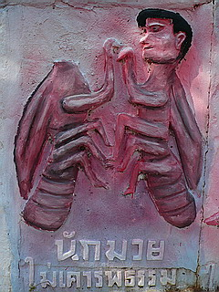 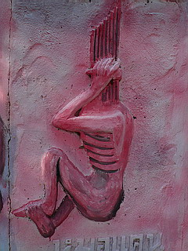
ここだけ何故か風味の違う絵が描かれていた。
別の作者？下書き？
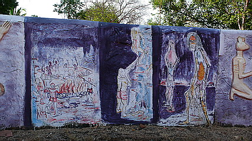
激シュールなコンクリパネルが続く様は昔見たベルリンの壁を思い出させる。
ベルリンの壁は西側の退廃文明を封じ込めるために造られたのだが、ここの壁は何を封じ込めようとしたのだろうか？
どっちかというとここの壁自体が退廃文明そのもののような気がするんですけど…
さて、そんなこんなでやっと壁の内側の地獄ランドに到達。
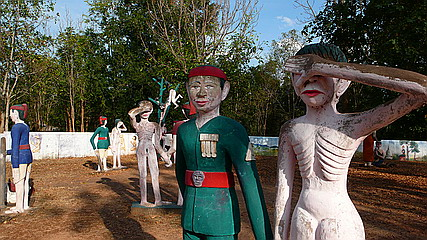
断末魔ギャーッ！血飛沫ドビャーッ！人肉鍋グラグラ〜！標準装備のタイ地獄界においてはかなりおとなしめの部類に属するといって良いだろう。地獄を作ってる時点でおとなしいもへったくれもないんだが。
お約束のトゲトゲの木。
地獄ランドのメインアトラクションである。
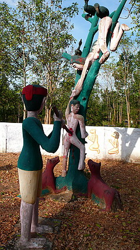 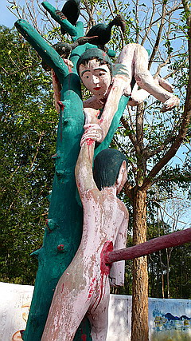
ここも出血量は若干少なめ。
お仕置き係のオジサンの焦点が定まってなくて不気味。
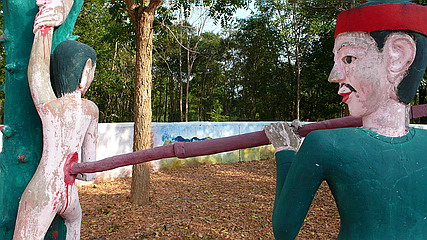
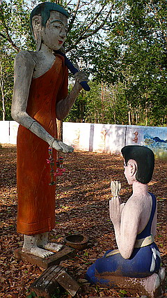 私も御坊様みたく耳たぶが立派になりますように…
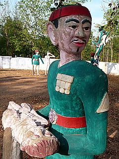
「この子はどこの子じゃろか…」
こちらは亡者と地獄の職員さんのツーショットシーン。
タイではよく逮捕者と警官のこういったツーショットが雑誌なんかに載ってますよね。
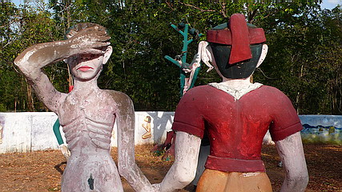
女性版。全然関係ないが裸を見られたときどこを隠すかは国によって違う、という話を聞いた事がある。
日本では局部だが東南アジアでは顔だそうで。ある意味合理的なのかもしれない。
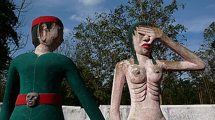
地獄を支配していそうな雰囲気の人物。
部下に指令を出してます。
「オイ、目が充血してるから目薬買って来い。アイボンのトローリなっ。」
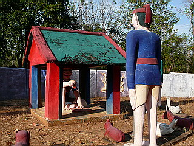 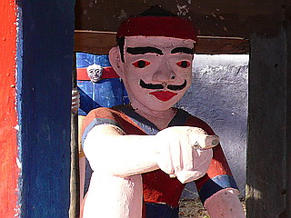
こちらは棒で殴られる直前、命乞い（って死んでるんですけど）をしているシーン。
「おっ、お願いです！
顔だけは殴らないで下さい！」
「…お前も大変じゃが、ワシも大変なんじゃよ…」
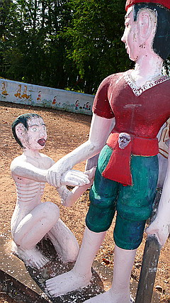 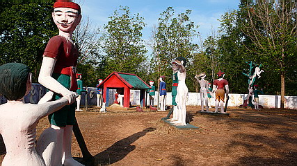
「えっ！」
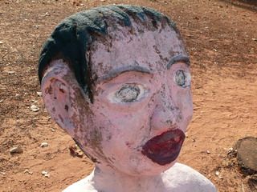
「虫で前が良く見えんのじゃ…」
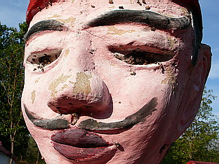
そんなこんなで地獄ランド巡りも終了。
地獄のコンクリ像ののほほ〜んとした雰囲気と壁のレリーフの超ダークな雰囲気のギャップが凄かったです。
もしかして壁のレリーフのキャラ作りで想像力を使い切っちゃったんでしょうか…
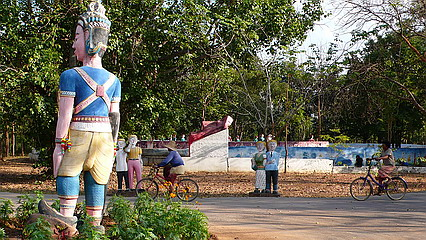
そろそろ日も傾いて来た。
お掃除のおばちゃん達もチャリで帰宅のご様子。
そろそろ引き上げましょうか。